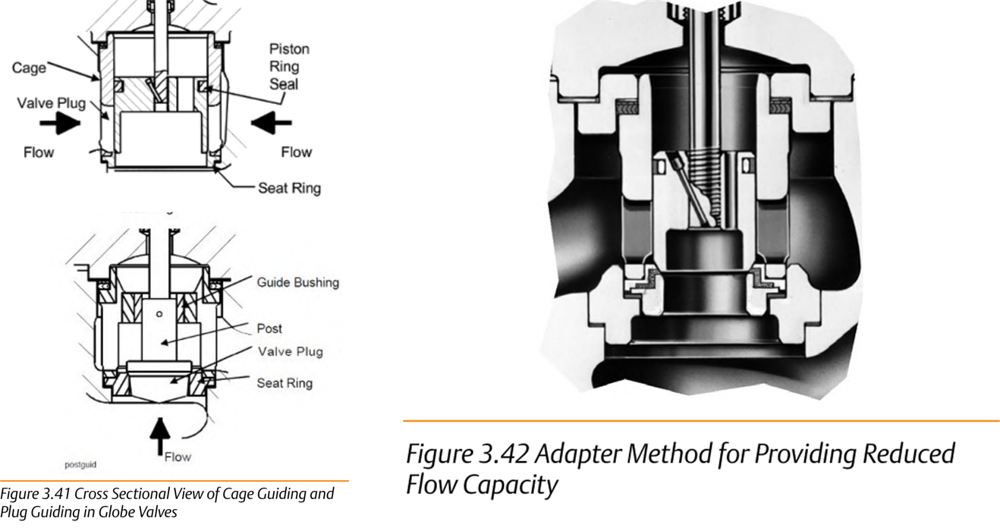

Trim Guiding and Reduced-Capacity Adapters

- 1Cage-guiding — the plug's outside diameter rides close to the cage bore throughout travel; bonnet, cage, and seat ring self-align as the valve closes
- 2Plug-guiding — a guide bushing in the bonnet (or a post fixed to the plug) keeps the plug centered on the seat, in place of a cage bore
- 3Reduced-capacity adapter — plug, cage, and seat ring from a smaller valve size mate to a larger body via adapter pieces above the cage and below the seat ring
After Control Valve Handbook, 6th ed., Figs. 3.41, 3.42 — used directly, combined side by side, Fig. 3.41's own printed labels retained. Component Index: cvh-cmp-cage-guiding-plug-guiding-cross-section, cvh-cmp-adapter-reduced-flow-capacity.